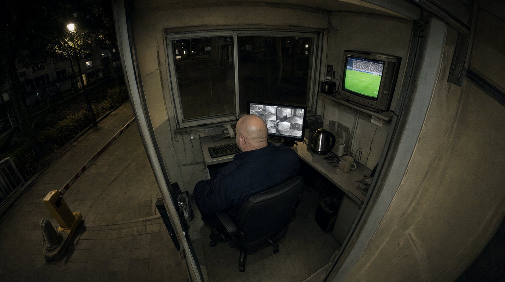

Підстава. Постанова старшого слідчого в ОВС СУ ГУНП в Івано-Франківській області майора поліції Волкова Д.С. від 19.10.2026 у кримінальному провадженні № 12026090010002417.
Об'єкти дослідження. (1) Флеш-накопичувач USB 32 ГБ із файлом «15.10.2026_23-00-00.mp4», добровільно наданий 16.10.2026 начальником служби охорони ТОВ «Лаз-Сервіс» Дячуком Р.М. як «запис камери поста за ніч»; (2) карта пам'яті microSD 64 ГБ (файлова система exFAT), вилучена 20.10.2026 з Wi-Fi камери, встановленої під стелею в приміщенні поста охорони ЖК «Дем'янів лаз». Камера пише циклічно, файлами по 3 години, із часовою міткою в кадрі.
| Ім'я файлу | Тривалість | Створено (файлова система) | Змінено |
|---|---|---|---|
| 14.10.2026_15-00-00.mp4 | 3:00:00 | 14.10.2026 15:00:01 | 14.10.2026 17:59:59 |
| 14.10.2026_18-00-00.mp4 | 3:00:00 | 14.10.2026 18:00:01 | 14.10.2026 20:59:59 |
| — файлу «14.10.2026_21-00-00.mp4» немає — | |||
| 15.10.2026_00-00-00.mp4 | 3:00:00 | 15.10.2026 00:00:01 | 15.10.2026 02:59:59 |
| 15.10.2026_03-00-00.mp4 | 3:00:00 | 15.10.2026 03:00:01 | 15.10.2026 05:59:59 |
| … 15.10.2026_06-00-00, _09-00-00, _12-00-00, _15-00-00 — без особливостей … | |||
| 15.10.2026_18-00-00.mp4 | 3:00:00 | 15.10.2026 18:00:01 | 15.10.2026 20:59:59 |
| — файлу «15.10.2026_21-00-00.mp4» немає — | |||
| 15.10.2026_23-00-00.mp4 | 2:59:00 | 16.10.2026 02:14:37 | 16.10.2026 02:14:37 |
| — файлу «16.10.2026_00-00-00.mp4» немає — | |||
| 16.10.2026_02-15-10.mp4 | 0:44:50 | 16.10.2026 02:15:10 | 16.10.2026 02:59:59 |
| 16.10.2026_03-00-00.mp4 | 3:00:00 | 16.10.2026 03:00:01 | 16.10.2026 05:59:59 |
Файл на флеш-накопичувачі побітово ідентичний файлу «15.10.2026_23-00-00.mp4» з карти пам'яті (збіг контрольних сум SHA-256).
1. Метадані. Усі файли, записані камерою в штатному режимі, мають назви, кратні трьом годинам (00, 03, 06 … 21), тривалість рівно 3:00:00 і дату створення, що збігається з часом, указаним у назві. Файл «15.10.2026_23-00-00.mp4» з цієї послідовності випадає: назва не кратна трьом годинам, тривалість 2:59:00, а дата створення файлу у файловій системі — 16.10.2026 02:14:37, тобто через 3 год 14 хв після часу, вказаного в назві. Дата створення й дата зміни збігаються до секунди — файл записано на карту за одну операцію, а не накопичувався під час зйомки. Послідовність файлів порушено: після «14.10.2026_18-00-00» відсутній «14.10.2026_21-00-00», далі — «15.10.2026_…». Відсутні також штатні файли «15.10.2026_21-00-00» і «16.10.2026_00-00-00». Файл «16.10.2026_02-15-10» почато поза сіткою — ознака ручного перезапуску запису.
2. Часова мітка в кадрі. Мітка «2026-10-15 23:00:00» і далі накладена на зображення повторно: під нею при збільшенні простежуються залишки іншої мітки (контури цифр того ж шрифту), навколо символів — артефакти стиснення та «ореол» шрифту, не характерні для інших файлів цієї камери. Відеопотік файлу перекодовано (параметри кодування відрізняються від штатних файлів камери).
3. Зміст кадрів. Протягом усього запису в кадрі — приміщення поста охорони; чоловік масивної статури у формі охорони сидить за пультом спиною до камери напівбоком; приміщення не залишає. На стіні над пультом — телевізійний монітор. Відібрано контрольні кадри:
| Мітка в кадрі | Що видно |
|---|---|
| 23:00:00 | Чоловік за пультом. На телевізійному моніторі — футбольна трансляція (зелене поле, гравці). |
| 23:55:10 | Чоловік за пультом, дивиться на телевізійний монітор. На моніторі поста — футбольна трансляція, табло в куті екрана: «ПРК 1:0 ПОЛ 68:02». |
| 00:31:50 | Трансляція закінчилась, на моніторі — вечірні новини (ведуча в студії). |
| 01:47:20 | Чоловік дрімає в кріслі, на моніторі — нічний ефір (кліпи). |

2026-10-15 23:55:10 POST CAM 01P.S. від експерта, неофіційно: я не вболівальниця, але на вашому місці я б подивилась, коли саме ці дві команди грали між собою. Календарі матчів, на щастя, не перекодовуються.